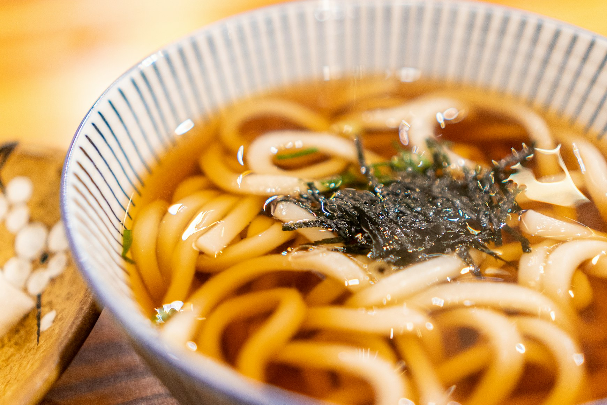
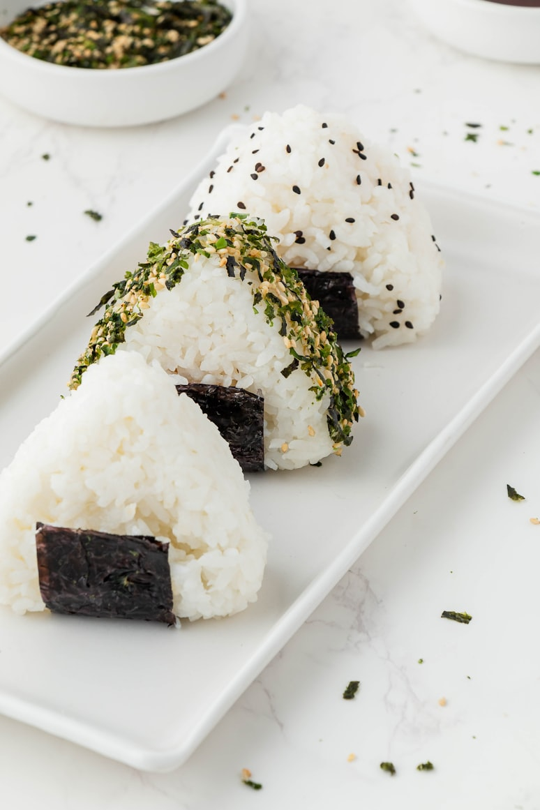
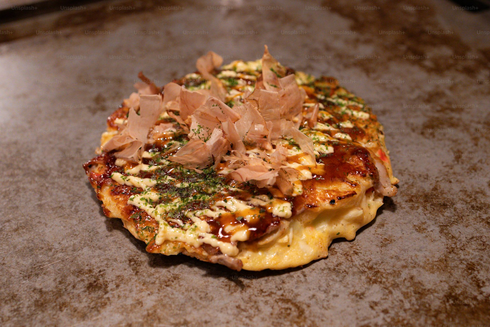
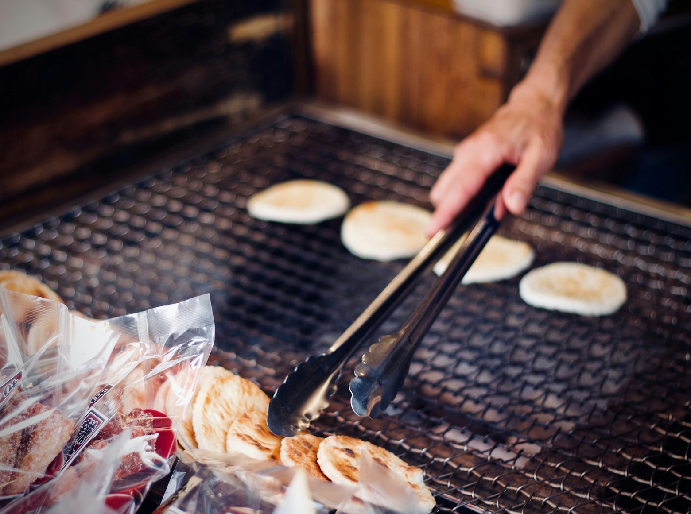

우동
- 우동 면 1~2인분 ,다시마 1조각 ,가쓰오부시 한 줌 ,물 4컵 ,간장 2~3큰술 ,맛술 1큰술 , 설탕 1작은술(선택) ,대파 약간 ,어묵/유부/튀김(선택 토핑)
- 1. 냄비에 물 4컵과 다시마를 넣고 약불에서 10분간 우린 후 다시마를 건져낸다. 2. 물이 끓으면 가쓰오부시를 넣고 1~2분 끓인 뒤 체에 걸러 육수를 만든다. 3. 육수에 간장, 맛술, 설탕을 넣고 간을 맞춘다. 4. 우동 면을 따로 끓는 물에 삶아 찬물에 헹군다. 5. 그릇에 우동 면을 담고 뜨거운 육수를 부어준다. 6. 대파, 어묵, 유부, 튀김 등을 취향껏 올려 완성한다.

오니기리
- 밥 1~2공기, 소금 약간, 김(조각 또는 통김), 참기름(선택), 속재료(참치마요·연어·명란·김치 등)
-
1. 따뜻한 밥에 소금을 약간 뿌려 간을 한다.
2. 손에 물을 묻히고 소량의 소금을 묻힌 뒤 밥을 한 줌 집는다.
3. 가운데에 원하는 속재료(참치마요, 연어, 김치 등)를 넣는다.
4. 삼각 또는 동그란 모양으로 단단히 쥐어가며 형태를 잡는다.
5. 김을 감싸거나 위에 덮어 완성한다.
6. 기호에 따라 참기름을 살짝 바르거나 깨를 뿌려도 된다.

오코노미야끼
- 양배추 1컵(잘게 썬 것), 부침가루 1컵, 물 1/2컵, 계란 1개, 대파 약간, 베이컨 또는 돼지고기 슬라이스, 오코노미야끼 소스, 마요네즈, 가쓰오부시, 식용유
-
1. 볼에 부침가루와 물을 넣고 반죽을 만든다.
2. 잘게 썬 양배추, 대파, 계란을 넣고 섞어 반죽을 완성한다.
3. 팬에 기름을 두르고 중불로 달군 뒤 반죽을 동그랗게 펼친다.
4. 위에 베이컨 또는 돼지고기 슬라이스를 올리고 굽는다.
5. 한쪽 면이 익으면 뒤집어 속까지 천천히 익힌다.
6. 완전히 익으면 오코노미야끼 소스와 마요네즈를 뿌린다.
7. 불을 끄고 가쓰오부시를 올려 완성한다.

센베이
- 찹쌀가루 1컵, 물 3~4큰술, 간장 1큰술, 설탕 1작은술, 맛술 1작은술(선택), 식용유
-
1. 볼에 찹쌀가루에 물을 조금씩 넣어가며 반죽을 만든다. (질지 않게, 살짝 뻑뻑한 정도)
2. 반죽을 작은 동그라미 크기로 나누고 얇게 눌러 동전처럼 평평하게 만든다.
3. 팬을 약불로 달군 뒤 기름을 아주 살짝 두르고 센베이 반죽을 올려 굽는다.
4. 한 면이 노릇하면 뒤집어 양쪽을 모두 바삭하게 구워준다.
5. 작은 그릇에 간장, 설탕, 맛술을 섞어 양념 소스를 만든다.
6. 구운 센베이에 양념을 얇게 바른 후 다시 약불에서 살짝 더 구워 양념을 졸인다.
7. 완전히 식혀 바삭하게 만들면 센베이 완성!